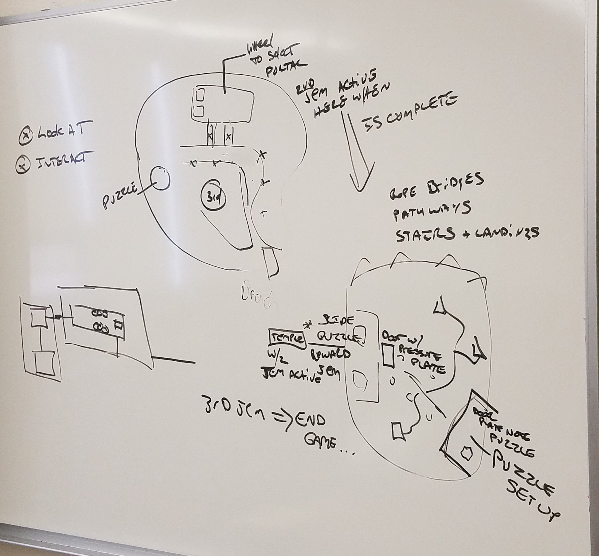

Forgotten Worlds
Year 1 Team Project - (4 Team Members - 3 Months)
Project Summary
Forgotten Worlds is puzzle-based, first person adventure game involving different worlds connected through portals. This project was a four person team project for the end of the first year. Our team had a 3 month deadline to go from concept to a playable verticle slice which was to be presented at the colleges annual show of games. For this project, I created the first island level and puzzle. We developed this project using C# in the Unity game engine and used github for source control.
Development & Challenges
At this point in time, this was the first year everyone on our team had been learning and using the Unity game engine. This project was also the first time working as a team on a game using source control. These two factors are what gave us the most trouble since we were still learning the ins and outs of the tools we were using. A few weeks in we had a close call with one of our levels getting deleted due to a miscommunication with source control. Thankfully we had a recent back up of all the levels and we were able to carry on as usual. To combat and reduce miscommunication we practiced weekly stand-ups, and used a chat room to stay in contact. The use of the white board to illustrate potential design ideas also proved to be very helpful. While we faced setbacks and challenges, in the end we were able to cross the finish line with a demo that was ready to present and took with us some valuable lessons.
